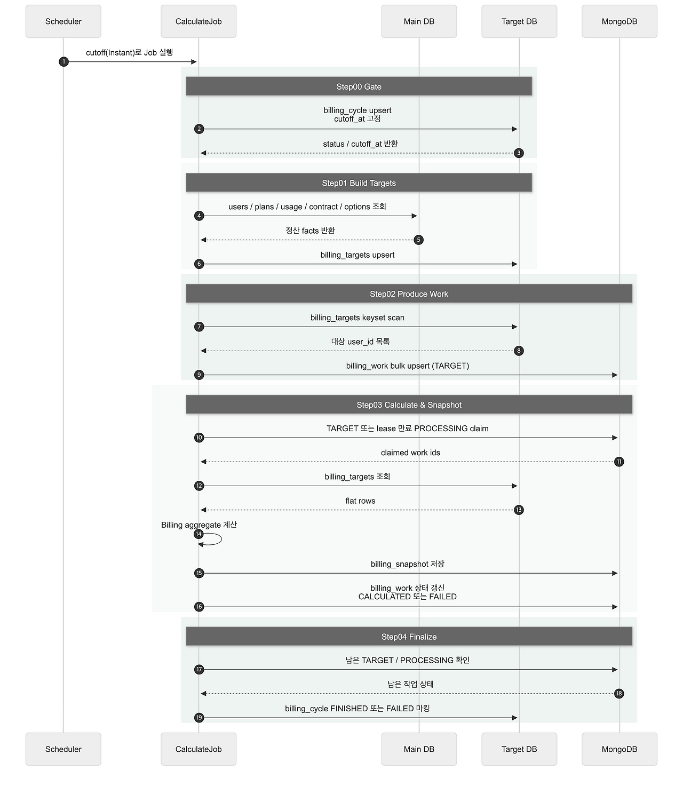
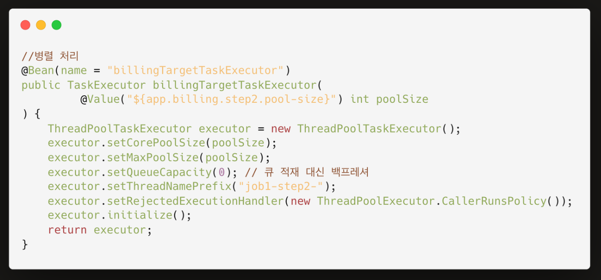
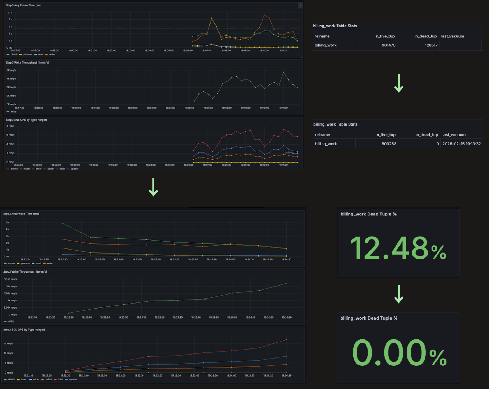

Dev Details
HOW I
BUILT IT
1
DDD · Bounded Context 설계
↗ 내용 자세히 보기

Event Storming
배경
TR1L은 정산, 발송 대상 선별, 실제 발송이 이어지는 시스템이어서 ERD보다 먼저 이벤트 흐름과 상태 전이를 기준으로 도메인 경계를 정리할 필요가 있었습니다.
도전 과제
- 팀원 모두가 같은 언어로 정산과 발송 흐름을 이해할 수 있는 공통 모델이 필요했음
- 청구서 발송처럼 하나의 흐름처럼 보여도 정산, 정책, 실제 발송은 상태와 실패 모델이 서로 달랐음
- 배치 상태와 운영 규칙이 서비스 계층 if 문에 흩어지지 않도록 경계를 먼저 고정해야 했음
해결 방안
결과
- 정산과 발송을 분리해 볼 수 있는 bounded context 구조를 정립
- 이후 배치 Job, 상태 테이블, 운영 규칙을 같은 도메인 언어로 설명할 수 있는 기준 확보 ↗ #319
2
Spring Batch 기반 100만 건 월 정산 Job 설계

Billing Batch Flow
배경
TR1L의 핵심 요구사항은 월별 청구서 집계와 발송을 100만 건 규모로 안정적으로 처리하는 것이었습니다. 요금제, 할인, 약정, 사용량처럼 계산 입력이 여러 테이블에 흩어져 있어, 장애나 재실행이 발생해도 같은 기준으로 다시 계산할 수 있는 구조가 필요했습니다.
도전 과제
- 배치 실행 시각이 조금만 달라져도 월 경계와 시간대 차이로 정산 대상 범위가 흔들릴 수 있었음
- 계산 Step 안에서 복잡한 JOIN을 반복하면 성능뿐 아니라 실패 시 어디까지 처리됐는지 추적하기 어려웠음
- 100만 건 규모를 멀티 워커로 처리하려면 중복 계산 없이 작업을 선점하고, 장애 난 작업은 다시 회수할 수 있어야 했음
- 운영자가 이번 월 정산이 어느 단계에서 멈췄는지 볼 수 있는 상태 모델이 필요했음
해결 방안
↗ 내용 자세히 보기
-
EventBridge가 전달한 ISO-8601
cutoff를 기준점으로 고정하고, 한국 시간 기준 전월billingYearMonth를 계산해 실행 범위를 확정 ↗ #113 -
billing_cycle을 게이트 테이블로 두어 최초 실행은cutoff_at을 기록하고, 재실행은 같은 기준 시점을 재사용하며, 완료 월은 NOOP 처리 ↗ #47 -
main DB는 조회 전용으로 두고, target DB에 유저당 1행의
billing_targets를 만들어 복잡한 입력 조인을 한 번만 평탄화 ↗ #67 -
입력 스냅샷과 처리 상태를 분리해 MongoDB의
billing_work와billing_snapshot로 멱등한 작업 큐와 결과 저장 지점을 분리 ↗ #317 -
마지막 Step에서 남은
TARGET,PROCESSING,FAILED상태를 다시 집계해 월 정산 완료 여부를 별도로 판정 ↗ #86
3
Step2 작업 대상 생성 구조 전환

Step2 Work Target Generation
01. 도전 과제
-
Step02는 100만 건 정산
대상을 Step03용 작업 큐(
billing_work)로 적재하는 단계였음 - 병렬 처리 전(job 26) 기준 1,079,865건 처리에 3496.036초 (58분 16초)가 걸려 전체 Job 병목이 되었음
- 대량 upsert 구조라 멱등성 유지, 멀티스레드 전환 시 reader 상태 충돌, 큐 적체, 메모리 증가를 함께 해결해야 했음
02. 해결 방안
- Step2를 multi-threaded chunk processing 방식으로 전환 ↗ #255
- TaskExecutor 기반 병렬 처리와 pool-size=8 / queueCapacity=0 / CallerRunsPolicy 설정으로 backpressure를 적용
- setSaveState(false)로 reader state 충돌을 방지
-
Writer는 bulk upsert 기반으로
billing_work를 멱등하게 적재하도록 구성
03. 성과
- 3496.036초 → 1665.775초 → 29.503초
- 병렬화 기준 52.4% 단축
- Step2를 병목 단계에서 수십 초 내 작업 큐 생성 단계로 전환해 Step3 병렬 계산의 실질적 기반을 구축
4
Step3 Claim / Update 경로 최적화

Step3 개선 전/후 지표
01. 도전 과제
- 정산 배치의 핵심 구간인 billingCalculateAndSnapshotStep에서 billing_work 선점·상태 갱신이 병목이었음
- update-heavy 구조로 dead tuple(min=12.48%, max=26.28%)이 누적되며 성능이 급격히 저하됐음
02. 해결 방안
03. 성과
- Step03: 10120.4초 → 674.5초, 약 93.3% 단축
- write peak: 9초 → 2.6초, 약 71% 감소
- 처리량: 4.8k → 11k items/s, 약 129% 향상
- dead tuple: 12.48% → 0.00%
- n_dead_tuple: 128,517 → 0